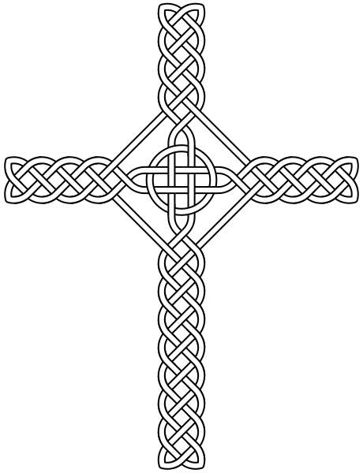

Cross designs for Jesus Christ
Selected designs, with their original reference numbers. Crosses without a human figure. All 15 downloads are editable vector SVGs. Colours have been converted to black and white; tonal detail is retained in textured designs. The preview sheets are PNGs. Original geometry and attribution are preserved.
15 · Projected tunnel
GDJ · OpenClipartCC0 / Public Domain16 · Diamond outline
GDJ · OpenClipartCC0 / Public Domain18 · Framed outline
PhilipBarrington · OpenClipartCC0 / Public Domain19 · Geometric inlay
OpenClipartCC0 / Public Domain20 · Ribbon wrapped
Firkin · OpenClipartCC0 / Public Domain21 · Celtic knot + ring

AnonMoosPublic domain22 · Ethiopian branch cross
KwamikagamiCC BY-SA 4.023 · Fleur-de-lis border
GDJ / OpenClipartPublic domain / CC024 · Jerusalem fivefold
paxed / OpenClipartPublic domain / CC027 · Circular lattice
FirkinPublic domain / CC028 · Filigree outline
GDJPublic domain / CC029 · Canterbury cross
Life of RileyCC BY-SA 4.033 · Dove arch cross
j4p4nCC0 / Public domain34 · Floral cross
OpenClipartCC0 / Public domain36 · Coptic ornament
SagredoCC BY 3.0